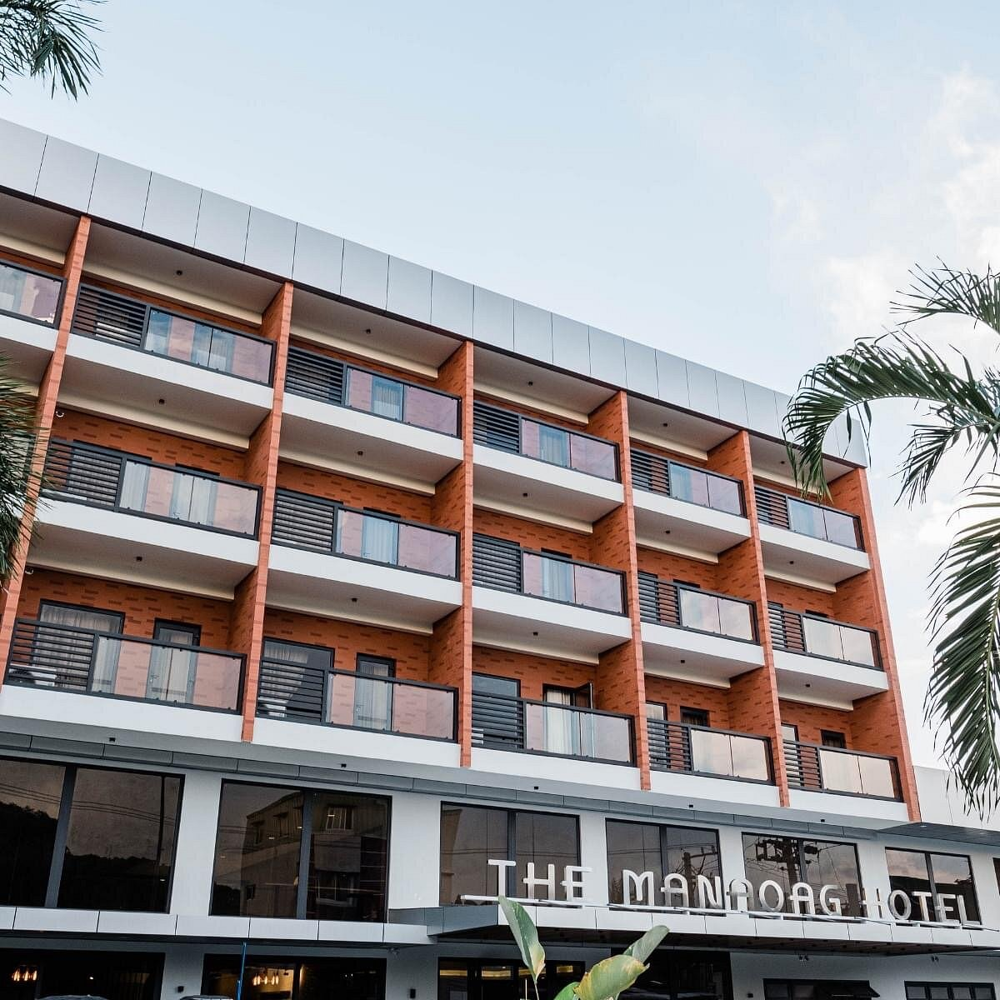
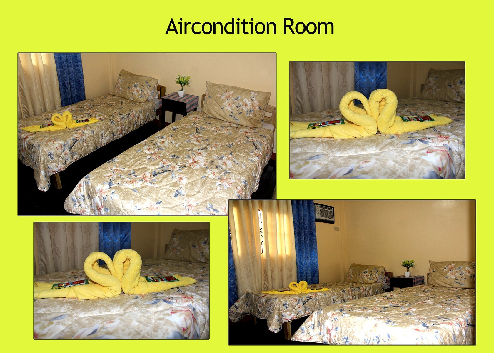
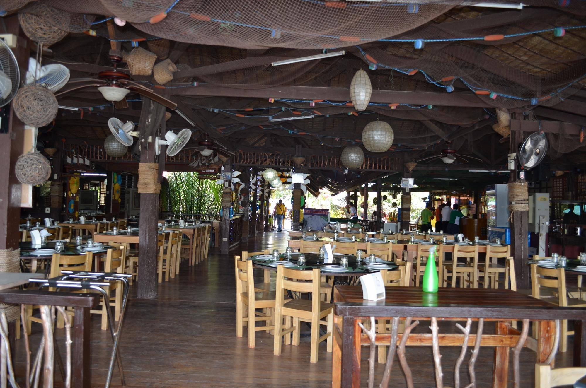
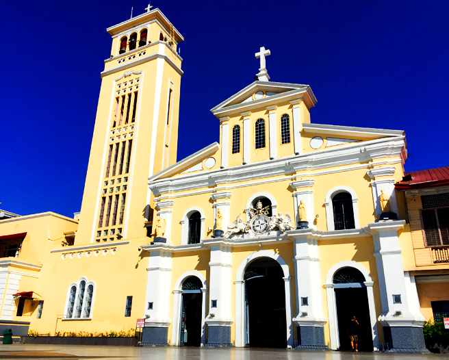
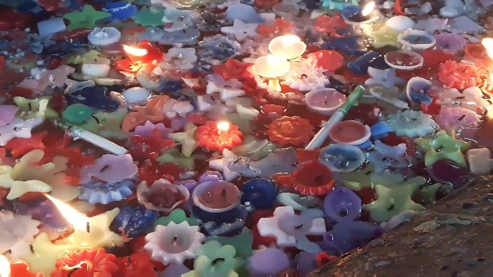
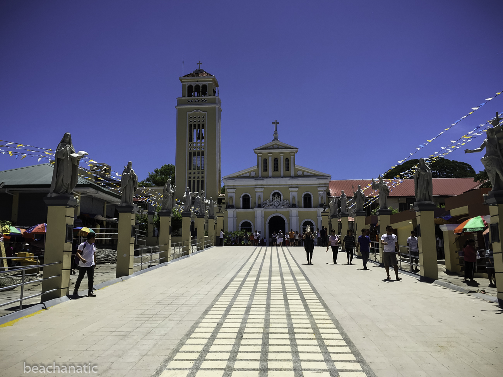
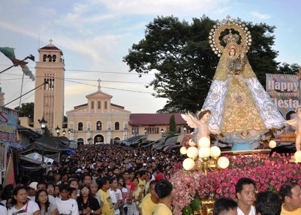

The Manaoag Hotel
pin_dropSoriano St, Manaoag, Luzon 2430 Philippines

Manaoag Transient House
pin_drop Brgy Babasit, Manaoag, Luzon 2430 Philippines

OneAlo Hotel and Resort
pin_drop Urdaneta - Manaoag Road Brgy. Lelemaan, Manaoag, Luzon 2430 Philippines

Matutina-Gerry's Seafood House
pin_dropDe Venecia Road Extension Brgy Pantal, Dagupan, Luzon 2400 Philippines
+63 977 826 0228

Ciudad Elmina Restaurant
pin_dropArzadon Road Mayombo, Dagupan, Luzon 2400 Philippines
+63 923 248 5977

Kuya Max Resto Grill
pin_drop De Venecia Road, Dagupan, Luzon 2400 Philippines
+63 75 523 5629
Travel tips
Research the Church: Learn about the Our Lady of Manaoag Church, its significance, history, and any specific customs or traditions associated with it. Understanding the cultural and religious context can enhance your experience.
Dress Appropriately: Since it is a place of worship, dress modestly and respectfully.
Avoid wearing revealing clothing and opt for attire that covers shoulders and knees. It's also customary to remove hats upon entering the church.
Be Respectful: Manaoag is a religious pilgrimage site for many Catholics. Be mindful of others' religious practices and beliefs. Keep noise levels low and refrain from disruptive behavior within the church premises.
Plan Your Visit: Check the church's opening hours and any scheduled masses or services you may want to attend. Consider visiting during weekdays or non-peak hours to avoid crowds if you prefer a quieter experience.
Offer Prayers: Many visitors come to Manaoag to offer prayers and petitions to the Virgin Mary. Take some time for personal reflection and prayer while you're there. You can also light candles as a symbol of your intentions.
How to get there?
By Bus
If you want to commute from Manila to Manaoag, you can ride a bus that goes to Manaoag, Pangasinan. You may want follow this tips:
Bus fares from Manila could range from ₱400 to ₱600, depending on the bus type.
By Car
If you have your own car or are renting one, you can drive from Manaoag to Manila.
Take the North Luzon Expressway (NLEX) southbound from Urdaneta or other nearby towns towards Manila.
The journey typically takes around 4 to 5 hours, again depending on traffic and road conditions..

1. Visit Our Lady Manaoag Church

2. Light a Candle

3. Explore Manaoag Town

4. Attend Religious Festivals